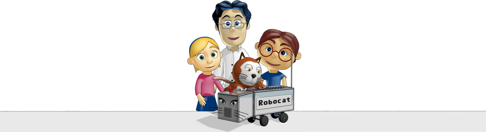
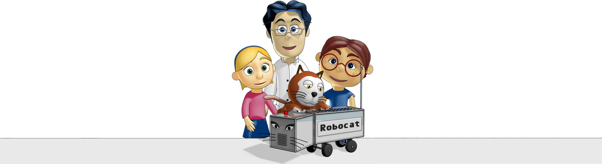

Nome:
Leonardo, ma a lui piace essere chiamato Leo
Età: 8 Anni
Hobby: Astrofisica, Informatica e Videogiochi
Aspirazioni: Diventare scienziato come la mamma
Piatto preferito: Pizza con patatine
Età: 8 Anni
Hobby: Astrofisica, Informatica e Videogiochi
Aspirazioni: Diventare scienziato come la mamma
Piatto preferito: Pizza con patatine
Leo è sempre attivo e dinamico. Adora la tecnologia e non gli sfugge mai nessuna novità informatica. È molto pratico ma gli capita di avere la testa per aria quando..osserva le stelle. È lo smanettone del gruppo e pensa che tutte le soluzioni si trovino sul web.
Nome:
Tilde, Matilde solo nei momenti importanti
Età: 6 Anni
Hobby: Accudire i piccoli animali, pallavolo, computer
Aspirazioni: Fare la veterinaria come il papà
Piatto preferito: gelato fragola e cioccolato
Età: 6 Anni
Hobby: Accudire i piccoli animali, pallavolo, computer
Aspirazioni: Fare la veterinaria come il papà
Piatto preferito: gelato fragola e cioccolato
Tilde è dolce e sensibile. Le piace la compagnia e ogni occasione è buona per farsi nuovi amici. La incuriosiscono le novità e le piace capire tutto, specialmente ciò che riguarda l'amatissimo mondo degli animali.
Nome:
Albert
Età: 26 Anni
Hobby: Fotografia, viaggi e bicicletta
Aspirazioni: Vincere il Nobel
Piatto preferito: Lasagne della signora Nina
Età: 26 Anni
Hobby: Fotografia, viaggi e bicicletta
Aspirazioni: Vincere il Nobel
Piatto preferito: Lasagne della signora Nina
Albert è socievole e solare. È un grande studioso e la mattina corre entusiasta a lavoro. Ha una cultura sterminata ma non la ostenta anzi, la usa per aiutare gli altri.
Nome:
Pixel
Età: 4 Anni
Hobby: dormire sopra il computer
Aspirazioni: Rincorrere Jerry
Piatto preferito: crocchette croccanti
Età: 4 Anni
Hobby: dormire sopra il computer
Aspirazioni: Rincorrere Jerry
Piatto preferito: crocchette croccanti
Pixel è curioso e gli piace esplorare il mondo, anche se adora tornare a casa e dormire sul computer di Tilde. Segue sempre la sua padroncina ovunque vada
Nome:
Robocat
Età: 1 Anno
Hobby: Raccogliere Dati
Aspirazioni: Robocat 2.0
Piatto preferito: 11000100110100101110100
Età: 1 Anno
Hobby: Raccogliere Dati
Aspirazioni: Robocat 2.0
Piatto preferito: 11000100110100101110100
Robocat ha le sembianze di una gattina ma è un sofisticato dispositivo in via di sperimentazione. Ha un cuore elettronico che pulsa...